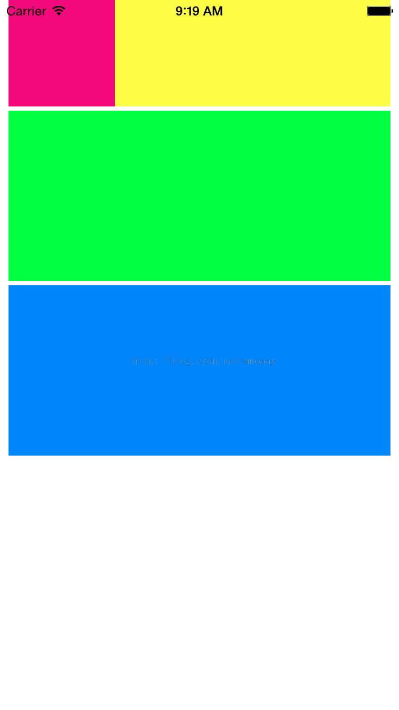
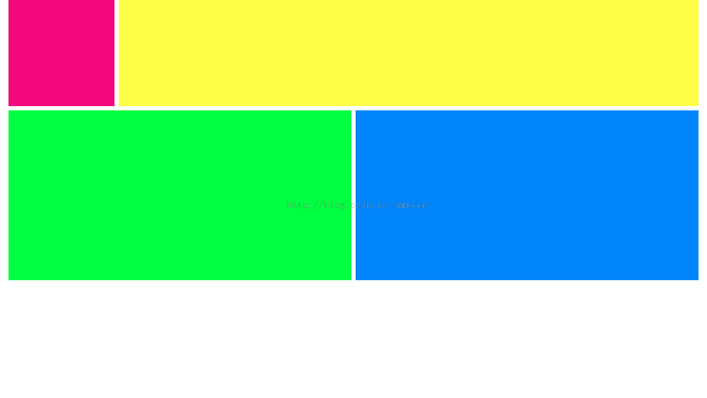

版权声明：本文为博主原创文章，未经博主允许不得转载。
历史车轮滚滚向前，将autolayout配合sizeclass做布局的方式推上了主流，虽然有点晚，但最终还是进行了一次完整的实践，特此记录一下：
因为网上已经有很多博客介绍了autolayout配合sizeclass布局的原理，所以我着重记录一下自己实践的过程：（可能会有错误，大家多多指正）
先来看看最终效果：

iPhone竖屏

iPhone横屏
iPad竖屏
iPad横屏
首先我们对最终效果进行分析，得出如下结论：
1.该布局适应设备包括iPhone和iPad。
2.iPhone横屏，iPad横屏和竖屏的布局是一致的（方式1），iPhone竖屏的布局是单独的（方式2）。
3.方式1和方式2边距都是一致的（8px）；红色方块和黄色方块并排，红色方块宽高固定（100px）；黄色方块高度固定（100px），宽度自适应屏幕；绿色方块和蓝色方块高度固定（160px）。
4.方式1红色、黄色、绿色和蓝色方块的间距均为4px；绿色方块和蓝色方块并排，宽度相等且自适应屏幕。
5.方式2红色方块和黄色方块的间距为0px，其他各方块的间距均为4px；蓝色方块在绿色方块下方，宽度自适应屏幕。
分析完毕，我们开始一步步实现这些效果：
第一步：创建一个single view application项目，注意Devices选项选择Universal。
第二步：打开Main.stroyboard，创建相应的View并调整它们的位置如下图（调整的办法用过storyboard的人应该都知道）：
注：红框中的部分是iOS8中新增的sizeclass特性。点击该区域会弹出如下的界面：
中间的九宫格控制了布局适应哪些设备的横屏和竖屏。具体原理参考这个博客：http://blog.csdn.net/lihuiqwertyuiop/article/details/39271887（ps：我就是看这个看明白原理的，所以我自己就不废话了）。
在之前的分析中我们得到了iPhone横屏、iPhone竖屏、iPad横屏和iPad竖屏下布局的几个共性。对于这些共性的东西，我们在wAny hAny这种模式下编辑，因为wAny hAny模式下的布局对所有设备在横屏和竖屏的情况下都有效。
首先设置红色方块的属性，如下图：
宽度和高度约束为100px，居上0px，居左-8px（截图和文字不一样是因为博主傻逼了，忘了改……因为默认对齐边界是-16px，所以如果需要边距为8px则输入-8px即可，至于为什么默认对齐边界是-16px，博主也不知道）。
然后设置黄色方块的属性，如下图：
高度约束为100px，居上0px，居左-8px（博主继续傻逼）。
注：这里我们没有设置红色方块和黄色方块的间距，因为在iPhone竖屏的情况下它们之间的间距为0px，其他情况为4px，所以我们需要在不同情况对应的布局模式下面去设置间距。
然后设置绿色方块和蓝色方块的属性，如下图：
因为在iPhone竖屏情况下它们不是并排排列的，所以这两个方块在wAny hAny 模式下只约束高度为160px。
接下来开始编辑iPad横屏和竖屏模式下的布局，对九宫格的模式进行切换，如下图：
wRegular hRegular模式，下面有提示：iPad横屏和竖屏下有效，刚好是我们需要的。
但是你会发现布局有些问题，没关系，我们在重新调整各个View的位置和宽度来达到下面这个效果：
然后继续为各个View添加约束，首先是红色和黄色方块的间距，如下图：
在红色方块内按下鼠标右键并拖动鼠标到黄色方块内，然后松开鼠标就会弹出上图所示的菜单，选择Horizontal Spacing，然后在下图所示的界面内将间距修改为4px：
注：在上图所示界面删除约束的操作是：选中约束项，然后backspace删除（不是delete，好诡异的删除方式）
同样的方式可以设置绿色方块、蓝色方块和黄色方块互相的间距。
然后我们来设置蓝色方块和绿色方块宽度相等，如下图：
同时选中蓝色方块和绿色方块，然后点击下方的按钮，在弹出的界面选择Equal Widths即可（你会发现Equal Widths和Equal Widths只在选中两个View的情况下才可用，这是很自然的事情，一个View怎么宽度相等…）。
最后我们设置绿色方块居左-8px，蓝色方块居右-8px，如下图：
至此我们完成了iPad横屏和竖屏情况下的布局。
然后是iPhone横屏情况下的布局，因为布局和iPad竖屏、横屏情况下是一致的，所以具体过程不在描述，只需要将下方的九宫格切换到wAny hCompact模式然后重复上述过程即可。
最后是iPhone竖屏情况下的布局，首先我们把九宫格切换到wCompact hRegular模式，然后调整各个View的位置如下图：
然后用“右键拖线”的方式我们设置红色方块和黄色方块的间距为0px，绿色方块和红色方块的间距为4px，蓝色方块和绿色方块的间距为4px
最后再用下方的按钮设定绿色方块，蓝色方块的左右边距均为-8px，完成iPhone竖屏下的布局。
至此目标成功达成。当然实现该布局的方式还有很多，大家在理解之后可以自由发挥。争取用最少的约束来完成这个布局。
个人的一些理解：
1.一般的情况下用wAny hAny模式就可以满足业务上的需求
2.设置两个view间距的这种情况用“右键拖线”的方式来设置比较好（因为在view比较多的情况下直接用下方的按钮来设置间距的话，编辑器不知道你是相对哪个view的间距）
3.下图所示的菜单能让你快速查看加上约束后界面的效果、更新和删除约束：
注：慎用Reset to Suggested Constraints（现在系统还没这么智能，说不定就坑死你）
4.如果某个view要固定宽高，一定要设置约束，不设置的话autolayout认为其宽高为0px。
5.如果某个view要水平自动缩放，设定它居左和居右的像素即可。
6.如果界面元素很多，可以考虑分层，把一些view包含在一个父view内，这样可以隔离它们和其他view的关系，界面约束会更加清晰。
7.如果针对不同的设备横屏和竖屏的布局是不一样的，首先要做的就是找到它们布局约束上的共性，在包含设备范围较大模式下把这些约束加上（比如wAny hAny 模式能约束的设备类型就比wCompact wAny模式多），这样就不用在每个布局都加相同的约束，从而减少工作量。但是有时候相同的工作也难以避免（比如上面的例子，iPhone的横屏和iPad的横屏、竖屏分别在两个模式下，虽然它们的布局是一样的，但是还是不得不做两次同样的工作）
8.给每个view起单独的名字，不然约束一多，omg，你知道哪个是哪个么？